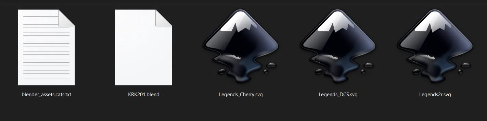
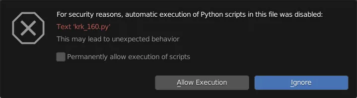

빠른 시작#
패키지 내용물#
다운로드 페이지에서 blend 파일, txt 파일, 그리고 각인 템플릿(legend template) 관련 SVG 및 기타 소재가 포함된 압축 파일을 받게 됩니다. 같은 폴더에 압축을 풀어 함께 두세요. 이 txt 파일은 Blender 에셋 관리를 위한 사이드카(sidecar) 파일이며, 반드시 blend 파일과 함께 있어야 합니다.

시작하기#
KRK2를 시작하는 방법은 초기 KRK와 마찬가지로 간단합니다. Blender(3.3 이상)로 blend 파일을 열면 필요한 모든 것이 파일 안에 들어 있습니다. 파일을 열 때 Blender가 내장 스크립트를 허용할지 묻는 창을 띄웁니다. KRK2 패널은 이 스크립트에 의존해 작동하므로 여기서는 「허용」을 선택하세요.

도움말#
커뮤니티에 참여하세요: Discord
관련 자료는 Blender 공식 매뉴얼 에서 확인할 수 있습니다.